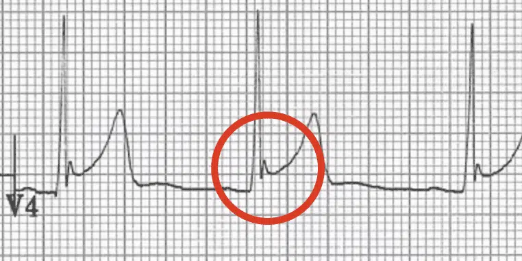
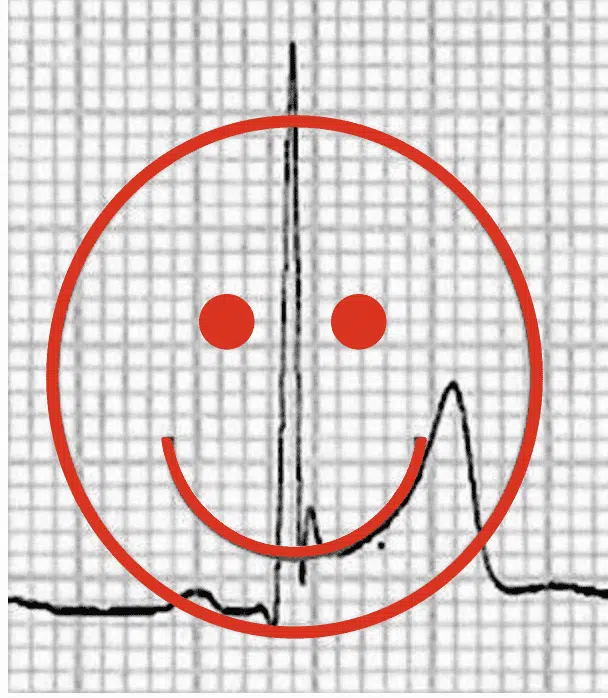
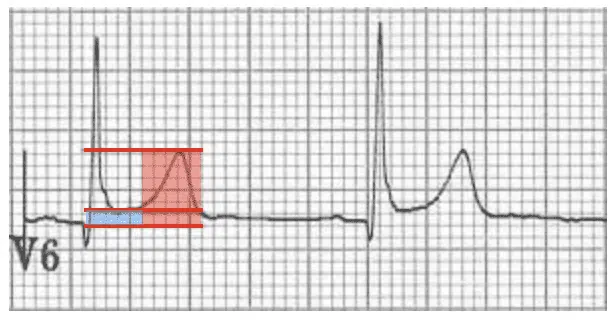
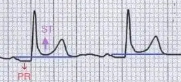
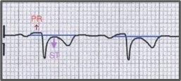
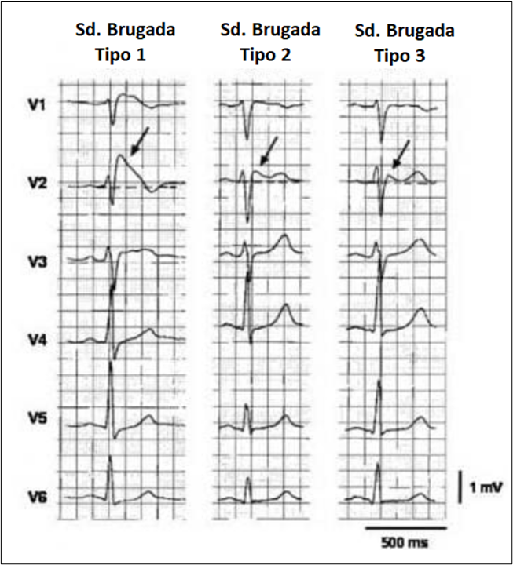

IAM com Supra ST anterior (V1-V6, D1, AVL) + Imagem em Espelho (discreto: DIII e AVF)
- Onda Q (V1, V2); redução R (V3, V4).
- Complexo ventricular prematuro (final V4-V6): risco arritmia maligna (TV, FV)
- Sinusal: FC 66 bpm

Entalhe J
Supra Feliz
Razão ST/T=1 mm/ 6 mm => 0,16 < 0,25
 0,16 < 0,25" />V5: Infra PR + Supra ST
AVR: Infra ST + Supra PR (Recíproco)

ECG: Síndrome de Brugada
